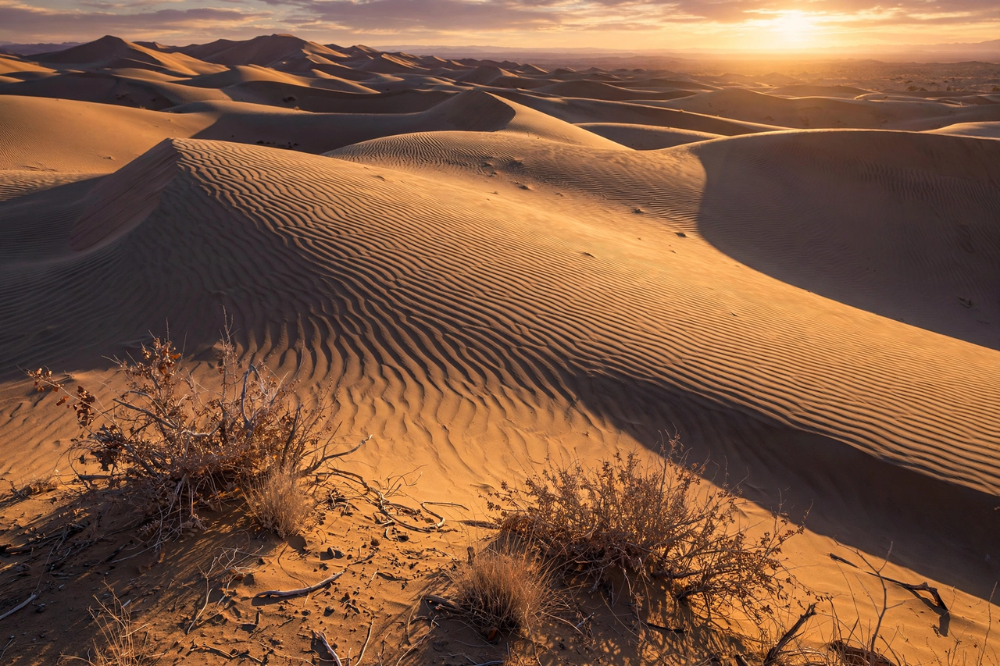

Desert

A desert is a landscape where little precipitation occurs and, consequently, living conditions create unique biomes and ecosystems. The lack of vegetation exposes the unprotected surface of the ground to denudation. About one third of the land surface of the Earth is arid or semi-arid, including most polar regions, where very little precipitation falls and which are sometimes called polar deserts or cold deserts.
The largest hot desert is the Sahara in North Africa, covering about 9.2 million square kilometres, while Antarctica is the largest desert overall by the precipitation definition. Deserts are characterised by large temperature ranges and sparse, specially adapted life.
Formation and types
Deserts form where air masses descend and dry out (subtropical deserts such as the Sahara and Arabian deserts), in rain shadows behind mountain ranges, in continental interiors far from the sea (the Gobi), along cold ocean currents (the Atacama and Namib), and in polar regions. Sand deserts of dunes, called ergs, cover only a minority of desert area; most deserts are rocky, gravelly or mountainous.
Life in deserts
Desert plants such as cacti and succulents store water and reduce water loss, while many desert animals are nocturnal to avoid heat. Human populations in deserts cluster around oases and rivers such as the Nile. Desertification — the expansion of degraded drylands — is a significant environmental concern driven by climate change and land use.